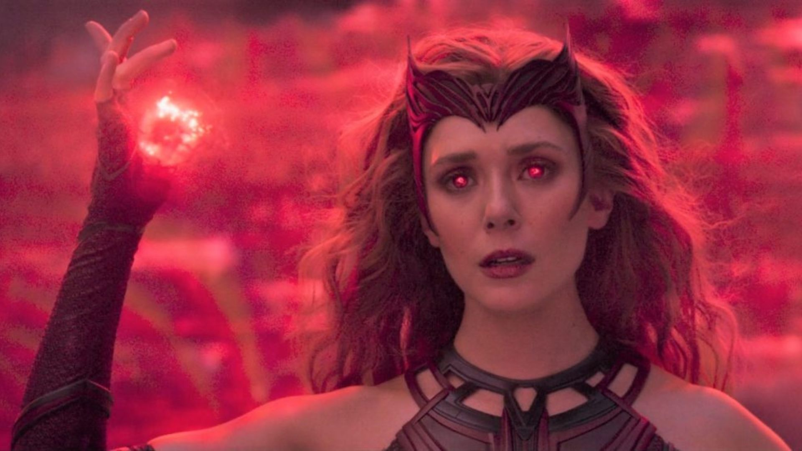

Feiticeira Escarlate
Wanda Maximoff, também conhecida como a Feiticeira Escarlate, é uma nativa de Sokovia que cresceu com seu irmão gêmeo, Pietro. Nascida com a capacidade mágica latente de dominar a Magia do Caos, ela desenvolveu um ódio contra Tony Stark e se juntou a protestos anti-americanos após os atentados de Novi Grad, que mataram seus pais. Em um esforço para ajudar a livrar seu país de conflitos, os gêmeos se juntaram à HIDRA e concordaram em passar por experimentos com o Cetro sob a supervisão de Wolfgang von Strucker, ampliando suas habilidades. Enquanto seu irmão desenvolvia supervelocidade, Wanda alcançou várias habilidades psiônicas. Quando HIDRA caiu, os gêmeos se juntaram a Ultron para se vingar de Stark, mas o abandonaram quando descobriram as verdadeiras intenções de Ultron de destruir a Terra. Wanda e Pietro lutaram com os Vingadores durante a Batalha de Sokovia para impedir Ultron; Pietro foi morto durante a batalha, mas Wanda sobreviveu e, logo após a destruição de Ultron, tornou-se membro dos Vingadores.
Durante a Guerra Civil dos Vingadores, ela se aliou ao Capitão América e foi brevemente presa na Balsa antes que Rogers a libertasse ao lado de seus companheiros de equipe. Nos dois anos seguintes, Wanda se reuniu e se reconciliou com Visão, e juntos os dois começaram a viver fora dos radares na Europa, iniciando um relacionamento. No entanto, os dois logo se tornaram ameaçados por Thanos e a Ordem Negra, que procuravam a Jóia da Mente. Depois de serem emboscados pela Ordem, os dois Vingadores se reuniram com seus colegas e procuraram refúgio em Wakanda. Wanda cuidava da proteção da cidade quando a Ordem Negra lançou um grande ataque; ela morreu no Estalo depois que Thanos completou a Manopla do Infinito. Depois que os efeitos do Estalo foram desfeitos em 2023, Wanda estava entre os muitos heróis que lutaram durante a Batalha da Terra, derrotando Thanos e seus exércitos.
